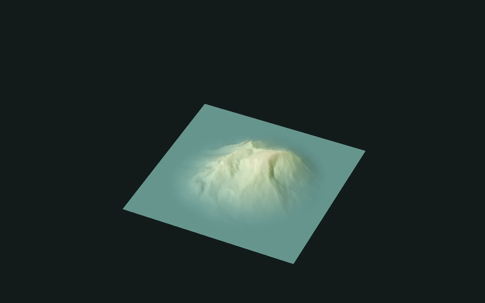

Node reference · v1
Edge · Node reference
Let the land fall gently toward its edge. Use round and square transitions, or clear a measured pixel margin while retaining the interior.
- Documentation edition
- 2026-10-19
- Operation version
- 1
This page documents this exact operation version. Documentation edition and backend implementation versions are separate.
Inputs and outputs
Inputs
- heightfield_0 required
Terrain heightfield carried by the Geometry input.
Outputs
- heightfield_0
Terrain with its outer region attenuated by the selected boundary profile.
Parameters
Contract fields come from a dated Catalog snapshot. Soft slider endpoints do not define hard validation limits. Numeric defaults use a readable display precision; exact typed values remain in the downloadable contract.
Style
StyleChoose Round, Square or Precise. Round uses a softened radial boundary, Square uses a rectangular profile, and Precise keeps an explicit pixel margin.
- Type
- Choice
- Default
Square- Accepted values
- Round / Square / Precise
Size
SizeControls the boundary profile in Round and Square. Precise uses Pixels instead. Compare the same input when changing the extent.
- Type
- Number
- Default
0.5- Range endpoints
- 0 (soft) → 1 (soft)
Pixels
PixelsSets the integer margin in Precise mode. This control does not affect Round or Square. A margin that leaves a constant mask produces a zero result.
- Type
- Integer
- Default
2- Range endpoints
- 1 (soft) → 500 (soft)
Softness
SoftnessSoftens the Round mask. It does not affect Square or Precise; keep the mode in mind when comparing this control.
- Type
- Number
- Default
0.25- Range endpoints
- 0 (soft) → 1 (soft)
Examples and verification
This reference explains the current contract; its linked evidence qualifies only the stated backend and cases.

- Three styles and all four original controls remain available. Parameters participate in their corresponding styles.
- The 85-case record includes 42 cases each at 64² and 128², plus one 1024² large-radius case.
- The 1024² images use artistic presets. Native loading has been observed; this record does not qualify every physical parameter interaction or GPU execution.
Stable help topic
node.edge · v1ce30b169ee8f1203963183b002a5a13e5a4136a5c5f7f70ec4282a6fbce87bfb